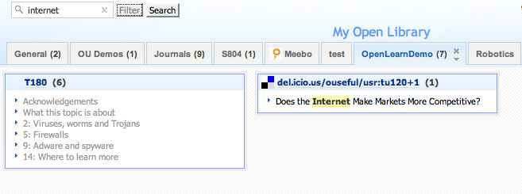
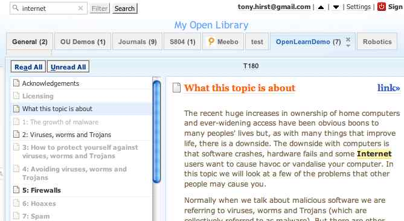
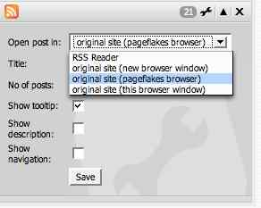
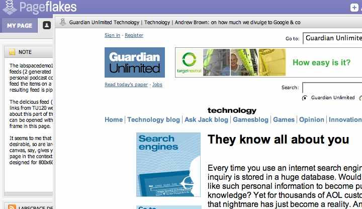
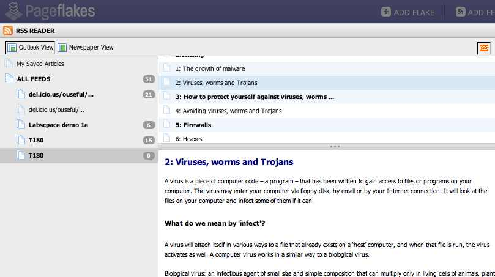
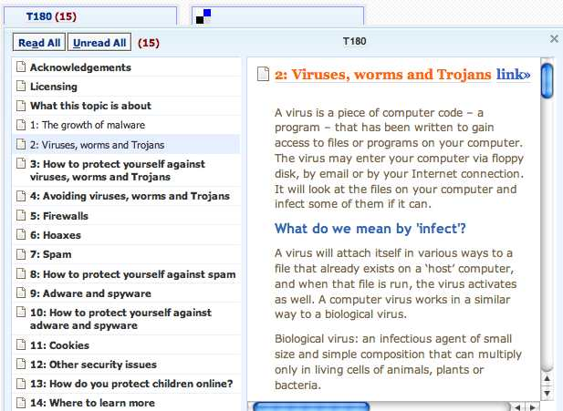
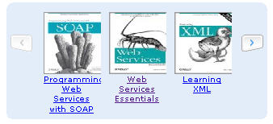

June 14, 2007
OPML Powered Dashboards
Since posting about the OU Institutional Dashboard Using Pageflakes, I’ve spent quite a bit of time thinking about this sort of surface and how they could be used to both manage and display OPML feeds:

In the first case - OPML feed management - feeds displayed on a dashboard tab could be made available via a derived OPML feed. (Netvibes allows you to export your whole feed collection, but not generate an OPML feed corresponding to the panels on a particular tab, I think?)
For example, here’s a an OPML version of the OU News tab:

(Here’s the actual OPML feed; and here’s one for the OUt There tab.)
This code is derived (handcrafted) from the feed panels contained on the corresponding tab of the OUseful Dashboard. It would be nice to see this sort of OPML feed made available from each tab.
I’ve actually grouped the feed links into folders that represent the columns on the PageFlakes page, to make explicit the intention being that surfaces like PageFlakes should also be able to display OPML files. Round-tripping could then be provided in two ways:
- An OPML file could be used to import a set of feed links into a tab. Pageflakes sort of offers this at the moment - an OPML file can be uploaded to a tab, wherein the OPMLd feed links are bookmarked and can then be placed on the tab as individual panels. I suggested to the PageFlakes chaps that as well as OPML file upload, import from an OPML URL should also be supported (as it is in OPML Manager, for example), so that may be on the cards some time soon?
 By exporting as well as importing OPML, this also provides an ad hoc mechanism for grabbing a copy of a particular dashboard tab.
By exporting as well as importing OPML, this also provides an ad hoc mechanism for grabbing a copy of a particular dashboard tab. - An OPML file could be used to feed a live set of feed URLs into a tab, turning the tab into an OPML reading list viewer. Grazr already does this, of course, but it doesn’t offer the dashboard style view that PageFlakes and Netvibes do. Subscribing to an OPML feed could then populate a tab from the OPML feed contents. The feed linked to above shows how it’s also possible to add a small amount of structure (which column to put each feed panel into) to the feed, albeit in a clumsy, clunky way. OPML feeds can also be used to define the contents of several tabs, as this (evolving) OUseful Dashboard OPML feed (via Grazr) demonstrates.

At the moment, I have just used the OPML to transport feed URLs around, but OPML as currently defined also allows you to transport HTML around inside an OPML item. This would be ideal for populating a simple HTML note panel, for example.
Being able to add functional items to a panel would also be possible by making use of something like GrazrScript. (For example, GrazrScript is used to define the OpenLearn search widget that appears on the first OUseful Dashboard tab.
Now there’s a thought: PageFlakes and Grazr joining forces...
In the meantime, how hard could it be to generate a panelled display from an OPML feed using something like Chris Ravensroft’s "Create your own WebTop in php/js in no time" approach? ;-)
May 28, 2007
Facebook News Mixing Desk
So the Facebook Platform has got me looking around their site a bit more... and just now I found this feed mixing desk:

Just like the Facebook Platform encapsulates the idea of application embedding that inspired my String'n'Glue Learning Environment, so this content mixing desk embodies something that's been on my wishlist for a long time...
Now I did think I'd written about this sort of thing before, on my original (now defunct) blog, Micro Info - but apparently not (unless the search is broken...)
The closest I can find is this: RSS Feed annotation Streams (as well as this OUseful post on Integrating Ad Hoc and Formal Communities). The implication here were patches for mixing in additional content to augment a particular target feed (more recently I've come to think of this in the particular context of elaborating an OpenLearn RSS course unit with additional materials).
The original idea, however, was more general and based on the idea of a mixing desk - taking in different feeds, 'amplifying' them a certain amount, adding in effects (annotations) or filtering them further, and so on to produce a final output feed mix.
[Update: found some of my thoughts on this topic on a mailing list archive: random thoughts on a feed mixing desk]
Anyway - Facebook have an implementation of sorts of this sort of model. Time to go play...
May 26, 2007
Popfly Openlearn Movie Player
Just had a v quick play with Popfly and put together with a couple of blocks a youTube feed powered movie player. It's very simple - just wire a feed input block to a movie player block:

When you inspect inside a block, context awareness allows the block to pick up on various things that are being piped into the block. In the case of the movie player block fed by a feed, it has picked up on all the feed item elements:

If you visit this page on my actual blog site (not through a feed reader) you should see the movie player embedded below... (or maybe not, if it requires Silverlight? or if it doesn't work in public yet? or if I've done something wrong? [Works for me on IE7 but nothing else...])
[UPDATE: embedded popfly player removed for a bit - it doesn't seem to be offering a good user experience just at the moment...]
Here's a screenshot of the player in preview form, just in case:

One other thing to note - when you want to share a mashup, several options are presented to you: Embed It | Download as Gadget | Add to Windows Live Spaces. The Embed it option provides HTML embed code as well as options to post it to Typepad or a blog that supports the MetaBlog API.
I did want to go and tinker with the feed, but Popfly has bugged out on me again and keeps hanging when I try to open the editor (Firefox on XP under Parallels).
Ho hum, early days....
MicroSoft Popfly - Mashups for the Masses?
Okay - it's late, but I just spotted my invite to Microsoft's PopFly mashup tool in alpha... anyone else been playing?
The interface suggests I have invites - but I don't? I assume blogging about the tool is ok, similarly posting screenshots, but I'm going to hold off for a bit*, at least until I get to knock up a demo or two (things are a little unstable on my machine at the mo ;-)
In the meantime, here are a couple of youTube movies - a 3 minute video overview of Popfly and a longer twenty minute video demo of Popfly:
Suffice to say - the app is web based - though you do have to install the Silverlight beta. This seemed to install okay for Firefox on OS/X, Macbook Pro (and also onto XP Pro under Parallels - although Parallels doesn't offer 3D support so I don't know how many of the graphical UI blocks in Popfly will work?).
* Okay - maybe a couple of quick comments about the app: the idea is much like Pipes - wire together functional/process blocks and UI blocks, setting internal parameters where necessary. There are a few functional/computational blocks - like regular expressions - which means you can get your hands a little dirty if you want to/have to. Of the third party apps, Yahoo had quite a few tools in the 'official' blocks toolbar (which also has space for user created blocks) but of Google support, there was no sign... Hmmm... ;-) [It seems TechCrunch noticed this too:-)]
With the Scratch educational programming'n'animation tool coming on to the scene last week, and the Yahoo Pipes web feed mashup tool three months or so ago, there's now quite a spectrum of drag'n'drop, plug'n'play mashup editors out there in the wild...
... not to mention point'n'click screenscrapers like Dapper and intuitive online movie editors like Scenemaker (which lets you tag clipped segments within youTube - and other online video sites - movies) and multimedia players like Splashcast for compiling multimedia assets in 'shows' and 'channels' that you can publish to your own site.
And here's one from the BBC that sneaked out quietly - find / listen / label - annotatable audio (more info here):
This is a tool for adding notes to radio programmes. You can split the programme into smaller sections, called snippets, and then add a Label.Radio programmes can be split into snippets, like chapters. These may be associated with articles in the programme, like interviews, or just mark out interesting bits. The purpose of dividing the programmes like this is to make it easier for everyone to Find and Listen to specific parts of the programme.
So there you go, a few more tools to add to the list that show how ICT education is getting left behind...
...and in case you haven't noticed, it's not just mutterings about ICT "education" that are getting louder - if you haven't already seen it, you could do a lot worse than taking 40 minutes out to listen to Sir Ken Robinson asking: Do schools kill creativity?.
If you think the answer is "yes", then what are you gonna do about it?
April 18, 2007
Time for TechCrunch, Academic?
Earlier this week, TechCrunch reported on fotowoosh, a service that "will turn any picture into a 3D image".
I blogged about this a bit ago whilst it was known as the popup project, a research project developed by Derek Hoiem out of CMU.
(Microsoft are also developing something similar - PhotoSYnth.)
Replying to comments on one of his own posts, Stephen Downes writes:
Having been around enough to have seen some history (and still a bit surprised to be in such a position) I would suggest that most of the 'innovations' brought to us by Google, Apple, Yahoo, Microsoft, YouTube etc. originated in academic environments and were copied by the corporations in question. In some cases, the corporation itself had its genesis in an academic environment.
I quite agree... and with the commoditisation of web scalable infrastructure that you pay for as you use it (think Amazon web sevices, Zimki and so on) I wonder whether the trend will be towards increasing numbers of academic projects spinning out of the lab (or maybe even course project work?) and into beta?
So - maybe there's scope for a TechCrunch Academic, that can cover neat stuff going on in academic research labs and help out with academics' often neglected public engagement and knowledge transfer activities.
Yes, of course some of this stuff gets talked about and demoed at academic conferences, but often it languishes at project's end.
Who knows, maybe a bit of techbuzz at the right time could spur on academic innovation and entrepeneurship, as well as pure research?
PS have you seen the new, Google maps presence enhanced MSG messaging client?
Get MSG - the world's simplest instant messenger (open source, web-based lite Jabber instant messaging client).
April 02, 2007
Viewing Powerpoint on the Web
Living as a I do now a) on a Mac, and b) usually online, I get fed up when people send me MS Office docs that I don't necessarily have viewers for or links to docs that I have to download and open...
...because being an untidy sort, my desktop and download areas - like my mailbox - are frequently cluttered with docs that I've downloaded so that I could use a desktop app to open and view them...
So henceforth I've giving up a little bit more of my life to an online solution: Zoho Quickread.

This browser plugin lets you open most office docs that are linked to from a public web page in the appropriate (online) Zoho app. No account necessary - I think?
Google do something similar, of course, with .doc docs in GMail, but Zoho is the more complete solution... at the moment...
[UPDATE 12/7/07 - As well as opening .doc and .xls attachments in GMail, GMail now also opens powerpoint .ppt presentation files, a precursor announcement to the imminent gPresenter app, I suspect..?]
There are bound to be issues, of course - like Zoho only being able to display public files (and not ones that require authentication to view them); and maybe some copyright issues - I'm not sure if Zoho maintain a copy of files you view, for example (or whether you can import them directly into your Zoho account).
In fact - the Zoho toolbar doesn't really solve the problem of opening emailed document attachments at all (whereas the Google solution does)...
...but it's a start...and it means I'll probably end up viewing more online presentations (that aren't slideshared) than I currently do...
PS hmm - I wonder - Zoho have pretty effective APIs for all their apps; and Yahoo just opened up their Yahoo mail API... I wonder???
February 22, 2007
Browser, desktop client or widget?
Earlier this week, Techcrunch reported on the Buddywave MySpace browser, a "a stripped down version of Internet Explorer 7, with some additional MySpace-specific functionality added".
Today, Read/Write Web posts about the Songbird music browser, which appears to be "a mixture of a music player and the web browser. Built on top of the open-source Mozilla code base, this desktop application lets you manage your local music collection, search for new music online as well as instantly play any music on blogs and web sites."
Hmmm... so do we want an OU client side app?
Or would it be possible to build a comprehensive OUniversal widget (or maybe a set of smaller, single function widgets (how do I get OU into "widget" or "gadget"?!)) maybe built using the planned Netvibes universal widget API?
As to why the Netvibes announcement is interesting, Techrunch comments: "Once launched, any widget created for Netvibes ... will work on the Vista, Google, Mac and Opera platforms as well. Support for Yahoo Widgets and other platforms will follow soon after."
Universal ways of working already exist in workaround fashion (such as using the various Amnesty widget converters to convert widgets built on one platform to run on another, or Google Universal gadgets that run across the Google Desktop, personalised home page etc.), but this looks like it'll be an altogether cleaner approach.
PS if widgets'n'gadgets are new to you, this post on the Yahoo widgets blog gives a good overview of the whole area and here's a vision of Universal widgets...
February 10, 2007
Amazon Book Search Pipe
I have *no* time to post anything for a day or two, so here's a screenshot of a pipe that took me less than five mins to make, reusing an Amazon book search feed strategy I'd generated some time ago to build my Grazr/Amazon book search widget.
Amazon-UK Books Search Pipe (or here's an Amazon.com Books Search Pipe).

All this is really doing is putting a URL to an RSS feed into the pipes environment (with a single search term argument in this case).
This demo identifies for me a couple of things I'd like to see the pipes environment offer.
- a listbox/select input option;
- a simple API for automatically creating a pipe on the fly from a URL; this could reuse ideas used in Grazrscript.
Picking up on that last point a bit more, here's an example growing out of the URL used in both the Grazr search form and the pipe mentioned above:
<grazr:formtemplate name="amznform" file="http://xml-%country%.amznxslt.com/onca/xml?Service=AWSECommerceService&Version=2005-03-23&Operation=ItemSearch&ContentType=text/xml&SubscriptionId=0P7A6QBN369NCGYXWBR2&AssociateTag=robofestauk-21&SearchIndex=%searchtype%&Keywords=%search%&ResponseGroup=Small,Images&Style=http://ouseful.open.ac.uk/amznSearch2RSS.xsl"/>
What I'm thinking is - would it be useful to be able to submit pipes to the community using something like:
http://pipes.yahoo.com/?newFeedPipeName=Amazon%20Search
&newFeedPipeURL=http://xml-%country%.amznxslt.com/onca/xml?Service=AWSECommerceService&Version=2005-03-23&Operation=ItemSearch&ContentType=text/xml&SubscriptionId=0P7A6QBN369NCGYXWBR2&AssociateTag=robofestauk-21&SearchIndex=%searchtype%&Keywords=%search%&ResponseGroup=Small,Images&Style=http://ouseful.open.ac.uk/amznSearch2RSS.xsl
and have the pipe generate a simple feed wrapper pipe, like the above, and auto-generate user input text boxes for the %delimited% arguments? (Okay, so it would be handy to be able to enumerate the %country% argument too, maybe with something like &_country=uk,us,ca?)
PS here's a Grazr fronted Amazon UK book search pipe:
November 22, 2006
Netvibes Search and the Pageflakes Browser
Over the last few week, Netvibes and Pageflakes have both gone up a version and Excite.co.uk has released its own Excite webtop/startpage as a beta ("European grown all the way!!" apparently - which seems to be the way of a lot of this display surfaces?). Paying a visit today to Pageflakes and Nettvibes (seeing how they handle a course content feed derived from an OpenLearn LabSpace course) a couple of new (to me at least) features caught my eye.
Firstly, Netvibes has a search filter that is applied over the feeds coming into a tab (the search is over link text and item description text, I think?):

The filter also highlights the search/filter terms in the feed item description:

In Pageflakes, there is the option of opening links (fin the example I'm using, from a delicious RSS feed) in a floating, pop-up browser within the Pageflakes environment:

I like the feel of this interaction - it's reminiscent of the "Now follow this link" lightbox pattern I doodled with a month or two ago.
Ideally, though, this pop-up embedded/floating browser requires a large screen resolution to allow the pop-up window to render the linked to page sensibly, yet still retain the Pageflakes context:

If you don't use either of these applications regularly, or you use one and not the other, it's worth popping back every so often, I think, to see what new innovations they have come up.
And finally, just to recap on how these services display the OpenLearn course content feed, here are a couple of screenshots.
First, Pageflakes:

And here's the same feed in Netvibes:

If you want to try out the feed, here are a couple of links:
Sample OpenLearn Course Content Feed 


It's also worth checking out the feed directly in Firefox and IE7...
November 09, 2006
Sending Wikimail Messages in Gmail
Yesterday, I posted details about Wikimail and linked to a Greasemonkey script that embedded a wiki in a Gmail message on receipt of a wikimail message. For today's post, I've extended the script so that its easy to post - and create - wikimail messages in Gmail.
As before, I've produced both a Greasemonkey script and a Firefox extension: wikimail Greasemonkey script, wikimail Firefox extension.
To send a wikimail from one Gmail account to another, click on the 'Compose Mail' link in the normal way. The compose toolbar in the send form is augmented with a text box and a link to 'Create wikimail'. Enter the name of the wiki page you want to send in the text box using the same syntax as described previously.
For example: wikimaildemo.wikidot or wikimaildemo.wikidot/newWikiMessage:

Click on the link and the corresponding wiki opens within Gmail:

If the wiki page already exists, it will be opened for editing. For a wikidot wiki, if the wiki page does not exist you will be offered the opportunity to create it. The wikimaildemo.wikidot wiki has been set up to allow anonymous access, so if you want to try out using wikimail, feel free to use that wiki and create your own wiki page.
Edit the wiki and commit the changes.
When the wiki was opened, awikimail link to the wiki that was created (if it was a new wiki) or opened (if it already existed) is automatically added to the body of the message that wil actually be sent. Note that if you have already typed something into the body of the message, it will be lost.

Now all you have to do is send the message to another Gmail user (if you want to add additional text to the body of the message, now's the time to do it):

When the recipient opens the message, they will see the wikimail link and any other text you added to the body of the message.

Clicking the Show/hide wikimail link will open the wiki:

So there we have it - an end to end wikimail solution in Gmail :-)
If you want to try it and you don't have a Gmail account, mail me - I still have a few invites left.
November 07, 2006
Read/Write Email with Wikimail
A couple of things over the weekend brought the idea of Wikimail - Read/Write email back to mind, so a half hour hack on Saturday and a chat with the handily online Brian Suda (who suggested the Read/Write Email moniker) mean there's a basic demo now available...
For those who don't want to click thru to the past for the background, the idea behind wikimail was to use email to pass a wiki backwards and forwards. Instead of reading an email message and replying to it, what I wanted for certain classes of email exchange was a more collaborative writing space, and a wiki seemed to offer an appropriate solution.
At this point, it's worth explaining that I work from home a lot, and I take part in way too many conversations that aren't really suited to email (part of the reason for trying to move some of them to chat/IM conversations).
In particular, one class of conversation that I think the structure of email exchanges often gets in the way of is an ongoing discussion, in which an informal document (maybe even a proto-blog post) is constructed over several email exchanges in the same thread. The conversants reply to replies, insert new comments within the flow of quoted text from previous emails, and maybe delete chunks portions of previously quoted text too.
So that's the itch behind the wikimail scratch: rather than developing a conversation through multiple levels of quotation and 'reply with quote' trauma, conversants could develop an idea via the wiki in their email space. The important thing was not to move the players out of their email client - the exchange should proceed within the email environment.
But first - what were things that brought it to mind this time round?
Firstly, I was looking for a free wiki that I could display in the tools frame of StrinGLE . When I first toyed with the idea of wikimail I tried embedding a Mediawiki wiki in an frame in Gmail - but it wanted to go to the top of the window, so I went on to playing with other things. Over the weekend, I came across a couple of free wikis that seemed to suit the bill - PBwiki and Wikidot...
Secondly, I've started wondering about the extent to which Gmail can act as the single interface to a lot of my online activity. I use the mail tools daily, GTalk instant messaging too, and although I've got the Google Reader in Gmail Greasemonkey script installed, I don't actually use it (I'm still on Bloglines, and wondering whether to switch to Google Reader...):

Thirdly was the news that Google had bought Jotspot, and I started wondering what hey were going to do with it... Jotspot wikis allow users to email comments in, with the mail comments appear at the bottom of the wiki page, if I remember correctly, but that all seemed a bit clunky when I played with it ages ago...
So - the time was right, and it took less than ten minutes to hack an old Greasemonkey script that would search the body of an open email message in Gmail for a keyphrase (like wikimail:wikimaildemo.pbwiki) and replace it with an iframe containing the wiki - http://wikimaildemo.pbwiki.com, for example.
There were significant usability problems with the initial, ultimately crude script (and I'm afraid I haven't addressed most of them yet, Brian...! Nor have I had a chance to play with Backpack...) and the application is not, as yet, very portable... i.e. it's restricted at the mo to Firefox and Gmail.
One major issue with the original script was that it was impossible to reply to a wikimail message, although I have fixed that problem, after a fashion...
Anyway - here's the demo; if you have Greasemonkey installed in Firefox and you want to try it out, install the wikimail4gmail Greasemonkey script and have a play...
Alternatively, there's a Firefox wikimail extension generated via this Greasemonkey compiler.
The wikimial script/extension will rewrite wikimail addresses as follows:
- wikimail:some.domain is rewritten as http://some.domain.com
- wikimail:some.domain/path is rewritten as http://some.domain.com/path (which means it can address subpages in a wiki)
Follow the cribs in the screenshots to find some demo/test wikis. The wikidot one allows anonymous access...
For example, here's a message in Gmail:

See the Show/hide wikimail over on the right? The wikimail script put that there (if anyone can give me a better graphic, that would be appreciated ;-). Here's what happens if you click it:

(Err - the URL for the GM script is incorrect in that screenshot - I've corrected it in the wiki though ;-)
A wiki appears. In this case, you will need to login (if you haven't already). That wiki is set up to allow guests in with password 'demo', so you can try it out if you want. Of course, you could always link to a private wiki (i.e. on ewith restricted access).
If you click on the Show/hide wikimail link again, the wiki will close.
It is sometimes sort of possible to link to a wiki that doesn't exist yet:

Sort of:

Here's a wiki on another site:

This one is set up for anonymous access, so anyone can go in and play - and also create new pages:

This shows how to set up a wikimail link to point to a subpage:

This means you can use the email thread to construct a conversation over serveral wikimail pages; or use one wiki for wikimail, with different pages for each wikimal thread:

There are still a few issues with closing wikimail frames in long reply threads, but a page refresh will usually sort that out if it's too annoying...
If you don't grok it from this description, try the script out ;-)
And if you do give it a spin, please let me know how you get on...
November 06, 2006
Amazon Search Widget in Grazr
One of the great things about the GrazrScript form elements is that they turn Grazr from being 'just' a feed reading and navigation widget into a platform for feed based widget development. If you can find a hackable feed URL, then you can probably do something interesting with it in Grazr :-)
So - here's my proper first effort (apart from the Hennepin County Library Catalogue search that is demoed in Stringle, of course...) - a couple of Amazon Search Widgets (I'll provide screen shots first, then embed the demos at the end of the post; I suspect this won't show up in a feedreader, so to see them you may have to click through to the full post on Feedburner or at the OUseful blog).
I actually produced two separate widgets that demonstrate the inline and outline ('federated') approaches that the current version of GrazrScript forms support.
Firstly, the 'outline' approach - a search widget that lets you search over several categories at once.
Here's the basic interface:

You can select the locale/Amazon shop by country:

When you've entered the search (in this case for "space ritual" ;-) the search is run over several different Amazon categories:

I want the music result:

Nice one :-)

Secondly - the inline approach. In this case, we are just going to pull in a single result feed. The main interface is similar to the previous one, except that now you can select the item category as well:

Here are the options I put in to start with:

Here's a search over electrical goods:

And here's the result:

Creating these widgets was easy, once I'd cobbled together an XSL stylesheet that transformed the Amazon webservice search results into RSS.
There was also a GrazrScript gotcha that got me (you can read about it on the GrazrScript forums).
Anyway - feel free to have a play, and maybe even try out one of these widgets on your own site.
Firstly, here's the multisearch widget (GrazrScript powered Amazon search widget over multiple categories):
Then the inline search (GrazrScript powered Amazon search widget):
It's easy to embed these search widgets in your own page - just follow the link(s) above and then look for the Add to your page link that Grazr kindly provides :-)
PS here's a quick way of customising a Grazr/Amazon search widget to let you 'hardwire' the locale and product type for the search. There are two buttons in the form - one uses Javascript, the other doesn't:
If the form doesn't appear in you feedreader, you can find one here: Amazon/Grazr search widget customiser
August 30, 2006
Google As Service Provider Trundles On...
Reported widely (this from the BBC is typical, and this from Information Week analyses the move in relation to Microsoft Live), Google are now hosting office like services for businesses: Google Apps for Your Domain (Gmail, Talk, Calendar and Page Creator at the mo, but presumably more to follow?).
And the offering is not just apps for businessy businesses, at that:

As you might expect, the Google monster has trundled on from from Outsourcing Email in Higher Education to providing the whole range of Google Apps for Education ...
Another interesting announcement that happened while I was away on holiday (darn it - I got an invite, but the beta is now closed...) was for Amazon's Elastic Compute Cloud (EC2):
... a web service that provides resizable compute capacity in the cloud. It is designed to make web-scale computing easier for developers.Just as Amazon Simple Storage Service (Amazon S3) enables storage in the cloud, Amazon EC2 enables "compute" in the cloud. Amazon EC2's simple web service interface allows you to obtain and configure capacity with minimal friction. It provides you with complete control of your computing resources and lets you run on Amazon's proven computing environment.
(For a quick review, here's the Techcrunch take on EC2.)
Sun have been offering this sort of service with the Sun Grid Compute Utility for some time, but Amazon's move is another step towards providing a complete set of web app backend services.
August 06, 2006
Carousel Widget: Similar Books
As part of another project, I've had a need for a little routine that will populate a carousel widget with 'related books' (as defined by Amazon!) given a particular ISBN.
The routine can be found at ./similarCarousel.php.
It come with a couple of arguments (to date):
- isbn - the ISBN of the book you want to find related items for;
- size - the "width" (i.e. number of book covers displayed at any one time) in the carousel.
For example, ./similarCarousel.php?isbn=0131401602&size=3 gives:

If you do make use of this widget, and you have your own Amazon affiliate/associate ID you want to use with it, I'd appreciate it if you'd add a little function that makes 1 in 10 at random referrals using the ID provided in the script in a click sharing sort of way.
This is something I will add anyway in the next week or two if I get a chance (I'll also factor in the ID of Bill Scott - author of the carousel widget - if he has one and I can get hold of it...). But if I don't get a chance to make this hack, and you can figure out how to make it so yourself, please do so... (It's late now and I need to go to bed...)
August 02, 2006
Wishlist Carousel
A few weeks ago, a really neat trick appeared on the Kokogiak blog showing how to go about Consuming Amazon's Web API Directly with Javascript (via JSON and XSLT).
I've been looking for a reason to try that technique out ever since then, and had half a mind that I'd like to use the approach to develop some sort of personally hosted bookshelf interface for my Amazon wishlist, as a precursor to trying out the same thing for OU Library new books listings (I was thinking of something along the lines of a homebrew version of the Blogbridge Library interface).
So when the rather neat Carousel component extension to the Yahoo user interface (YUI) tools appeared, I realised the ideal opportunity had arrived.
So much so in fact that I had to take today off as holiday so I could spend some guilt free time tinkering with code;-) And the result?

...or see a demo here: Carousel and Amazon2JSON Wishlist demo
The script at the moment is a bit crude and needs tidying/fully reconciling against the YUI libraries. However, it does demonstrate quite a few things:
- the use of an Amazon webservice to pull down my wishlist information: Amazon wishlist feed
- the use of an Amazon webservice powered XSLT against this XSL file to produce this JSON feed;
- how to pull in a JSON feed to a file and then consume it (cribbed from Kokogiak; this actually needs revising to just use YUI components, which will make the code a bit tidier);
- the use of Bill Scott's YUI carousel component to display the images.
One of the main reasons I like this approach is that the solution can be managed completely on the client side. That is, no need for server access (assuning you can pull the necessary YUI files in from somewhere) or browser jiggery pokery trying to get around the browser cross-site XML security policies.
That said, the next demo I have in mind for the carousel component - using it to display new books in the library by consuming the new books feeds - I think I will do on a server. Using Ning, maybe? Then others can play along too even if they don't have access to a server of their own...
Update 14/8/06:: here's another demonstration of using JSON to populate the widget with book covers, a new books carousel. This also adds a reflection of the book cover, which is a neat effect.
July 01, 2006
A Neat Live Clipboard Demo
I like the idea of Live Clipboard a lot, though I've yet to build anything that makes us of the functionality. And I think I like it even more after playing with this web clipboard demo today.
The web clipboard demo shows a listing of blog post headers that can be cut from a web page and pasted to other parts of the page (in the same - or different - window, browser, etc.)
Two landing sites (pasting points) are defined on the page - one that pulls in the actual post content from offsite and displays it in the page, the other that displays a description of the resource. For the blog post item, the content of the post is actually pulled in from outside when the resource link is pasted to that landing site.
This is poorly explained, I'm sorry, (it's late here...) so go an play. Or check out this 2MB movie I made earlier to show the functionality off to a couple of other people: silent web clipboard screencast. Note that the main action takes place in Firefox, although I bring in IE at the end to show how items can be cut from a page displayed in one browser and pasted into a page loaded in another browser altogether.
There's a whole load of stuff going on under the bonnet in there that I don't know much about (and won't really, until I have a proper play and build one or two things myself) but as this demo shows, the web clipboard stuff is getting easier to do with each iteration of the thinking behind it.
The big question for me is - how can we make use of this stuff??? E-portfolios?
Update: walking the dog this afternoon, I wondered whether the web clipboard code could be used in a custom Netvibes tab. This required including necessary styling - and all javascript - in the file (rather than using file includes/style imports) and recasting the onload function to the Netvibes equivalent (NV_ONLOAD). However, while it all worked in simulation, I couldn't get the landing image to load in the live Netvibes panel. Maybe this is easily fixed, maybe it isn't, but I don't have any more time today to spend on this, and other projects beckon for the next week at least. However, I do think that adding webclipboard functionality to Netvibes would be really handy, and provide and excellent playground for tinkering with the idea of the live/web clipboard. If anyone gets a demo of this working in Netvibes, please let me know:-)
June 19, 2006
Popup Project (= Fotowoosh) - 3D Images from 2D photos (with Google Earth potential...)
Stephen Downes has just posted a link to this demo of how "Google Maps has added the ability to overlay information files created in the Google Earth format", which is something I'm going to have to try out.... But it also reminds me about the Popup project I came across the other other day which I haven't had a chance to explore yet, but the idea of which got me really excited...
The Popup Project, created by Derek Hoiem (et al. (?)) at CMU, automatically constructs simple "pop-up" 3D models, like those one would find in a children's book, out of a single outdoor image (i.e. a photograph). (There's a write-up from last year's ACM Sigraph about it here.) The 3D model is provided as a VRML file.

[UPDATE (16/4/07): it looks like pop-up is at the heart of a new online service, fotowoosh, that will take your photos and create 3D VRML models from them.]
As I stumbled across this just before a dog walk, it was natural for me to idle awhile on the popup project as we went trudging through the woods (the bluebells have all gone now:-( And the idea that fired me up was how neat it would be if you could take an outdoor photograph, run it through the popup engine, generate a VRML file and somehow import this into Google Earth.
Now I know from Google's acquisition last year (?) of Sketchup ("a simple but powerful tool for quickly and easily creating, viewing and modifying your 3D ideas") that it's possible to create 3D designs and import them into Google Earth. But I don't think I've ever seen mention of a VRML import option into that environment, which could be a problem...

Anyway, I did a bit of digging and turned up one interesting looking possibility: The Google SketchUp model was created by translating the CIS/2 file to VRML. The VRML was converted to DXF with Deep Exploration and then imported to Google Sketchup.
Ah - so maybe there is a way.. Can you imagine just imagine it - taking an outdoor photo of a building, chug chug clunk clunk computing with it for a bit, and then importing it as a 3D model into Google Earth ;-) (Yes,yes, I know it wont be that simple, and the conversion routines probably won't respect each other properly, but can you imagine it?:-)
I wonder too if any of the online gaming environments like Second Life can import VRML files directly...;-)
PS Deep Exploration has a 30 day free trial/download offer, and I've managed to get hold of a Matlab runtime environment so I can run the Popup code, so maybe if I get a spare day or two (to allow for problem time!) I'll try and get the packages running together and have a play...
June 14, 2006
Flock Released in Beta - Is It a PLE?
[Problems with a slow server meant this post was originally posted several times as I misintepreted a Flock error message...]The Flock browser is now available in beta...
With full blogging integration (I'm writing this post in the Blog Post tool, which supports wysiwyg or code views), photoservice integration (flickr, photobucket), feed reader (fully integrated with feed autodetection), bookmark service integration (delicios and shadows), enhanced search (live search over local favourites, history and your search engine of preference) and an in-built notepad(drag text or images to it for later use), this is a seriously neat browser:-)

The photo-integration/photo-publishing is particularly clever. I pasted a clipboard copy of the above image in the blog tool and the browser uploaded it for me to my photo-sharing service account, then dropped the link to the image in to the post.
This integrated content consumind and content publishing environemnt is just the sort of thing that was being talked about at last week's CETIS PLE events (and also in Stephen Downe's talk here at the OU) [I've still to blog my thoughts about these.]
In particular, during those events, Stephen gave a quick demo of writr, a minmal (and very effective) browser based authoring environment, and Scott Wilson demoed Plex a couple of times (I reviewed it briefly here, but now I've seen what it can do, I think I need to revisit it).
I wonder how well a FLock demo would have gone down too???? More on Flock when I've had a chance to play with it a bit more...
Blogged with Flock
May 04, 2006
Talis Silkworm Library 2.0 Platform
Update: documentation for the Talis Platform
(Library 2.0) API is now starting to appear on the Talis Developer Network at Talis Platform API.
A week or so ago, a public draft of the Talis Community Licence appeared in this blog post.
It came with the following claim:
[This licence] is going to play a key role in [the Talis Silkworm] technology platform. It gives users and contributors of all kinds of platform data some fundamental rights with one important restriction. Basically it:* Grants the freedom to use the data for any purpose
* Grants the freedom to modify and mix the data
* Grants the freedom to redistribute copies
* Prevents any attempt to deny those freedoms to othersWe're expecting the Talis platform to manage and make available under this licence a huge variety of data ranging from MARC to RDF and everything in-between - that's 4 decades of data formats!
The licence has its roots in the GPL and includes the same sort of redistribution...
I mailed this announcement to a select few, with the comment that it seemed to signal the imminent arrival of an open APIs to the Silkworm platform, something that had been hinted at when Paul Miller, the Talis technology evangelist spoke at the OU a couple of weeks ago.
Well - you'll be glad to know the first phase of the Talis Library 2.0 platform duly arrived in the form of the Silkworm directory last week (blogged about here).
A few of us had had a sneak preview (much appreciated, thanks) beforehand, which is partly why I've held off blogging about it - I'm a little guilty that I haven't found the time to knock up some sort of OU/Silkworm mashup (I was hoping to find an hour (that may have turned into four - you know how it goes!) to put something together, but other things are afoot at the moment that have got in the way of anything that might turn into open ended play time...)
Anyway, the first Silkworm Direcroty interface is now open to play with, and I'm assured API details are on the way.
As some details are out now, and more due any time, I think it's probably ok to pass on some of the details that Ian Davies originally mailed out:
Technically the directory runs off an RDF store using Jena and Joseki, fronted by a thin web app written in ASP.NET and XSLT. The directory stores descriptions of collections, physical locations and electronic services. [e.g. here's a description of the Open University collection] We'll be introducing grouping of resources, descriptions of organisations and relationships between collections soon. The services are described in detail as RDF so we can programatically build queries into them. ... There are a number of other RDF-based services .... Each primary resource in the directory links to its RDF representation via a little blue icon beside its title. These point to our sparql endpointFor the sparql service we plan on not allowing GRAPH/FROM queries
either, certainly not from day one. As we scale the service out we might
enable it.We're using Joseki for the Sparql stuff. All the pages you see at http://directory.talis.com/ui/ are generated using XSLT on RDF/XML coming out of Joseki.
Collection information is alo published as HTML as this page describing the OU Library OPAC demonstrates (the enabled search over the catalogue even works, too:-)
Some of the URLs look as if they are going to be hackable, generatable(?), which is handy. For example, this URL: http://api.talis.com/1/node/items/ad9.sw/bib?title=rdf is described as follows:
We have a public service that uses the service information to automatically link into the OPAC. For example, on that page above you can see the generated identifier for Bath University is "ad9.sw". You can plug that into a URL like this and search for RDF.The [URL] syntax is a custom one based on what we know we can support for the majority of our service descriptions. It currently supports isbn, title and author parameters. Full documentation is coming :) We plan to support "real" protocols like SRU and OAI and map them to the capabilities of the target OPAC. These will have URLs like:
http://api.talis.com/1/node/items/ad9.sw/sru
An RDF returning search is also supported, taking the form http://api.talis.com/1/dir/collections?api_key=?????&search=open:

One thing I'm keen to explore is how the library location lookup service can be used to augment the OU 'Libraries Near You' service which provides an ugly interface to a 'library by postcode' lookup service augmented with information about lending rights for OU students, as well as library opening times and other administrative information.
In contrast, the Silkworm version goes for a Google maps mashup:

At the moment though, the OU data is far more reliable (and maintained). The Talis approach appears to be appealing to community support/maintenance of the library information database, something the OU has done centrally (by phoning people up and hassling them, I guess!)
One thing I'm keen to explore is how we can work with Talis on maintaining this sort of information, and guaranteeing its correctness, for mutual benefit. (I should qualify that - I am 'outside the system' and so restricted to buolding proof of concept demonstrators that othe people would have to decide to adopt...)
If you want to keep up with what Talis are doing, I believe more announcements are due throughout May on the Talis Developer Network.
April 28, 2006
Live Blogging with Instant Messaging, Plus?
The live blogging that I was trying out at the OU Learning and Teaching Conference over the last couple of days has given me a lot to think about, and I'll be posting my reflections on that topic in the next couple of days, but one thing I want to mention before I forget(!) is that it was not really live.
The way I was blogging was to take session notes (in Performancing for Firefox) and then post these to the OUseful blog at the end (or thereabouts) of each session.
To be really live, I would have had to be posting (and editing) the blog post every few seconds. There is a certain hassle factor associated wth this of course...how much neater if I could sign on to a blogchat room and use an IM client to post straight into a blog post, real time (or near as makes no difference).
That is, imagine a blog post to be a chat room transcript, updated in realtime.
I'm sure there are systems that already provide much of this functionality (I'm not really up on IM) but I don;t think I've ever stumbled across anything that explicitly claims to provide an IM blogging solution.
As to whether it's desirable or not, that's another matter (e.g. I always do a quick scan of my blog posts before publishing to try and root out the worst of the typos - although many still get through (I really should sort out a blogging client spellchecker!). This error checking would perhaps not be supportable ina trivial blogIM client...)
Just while I'm thinking about enhanced IM facilities, I'd like to mention a service I've yet to play with but have read many favourable reviews of: 37 Signals' Campfire small business chatroom cleint. One of the features that makes me want to try this service out is the ability to easily upload files to a chat room and refer to them (via a link) from within a message. This use of IM to discuss a document seems to be a very powerful feature.
The problem with IM is that is doesn;t readily support multiple threads (i.e. the flow is a linear one) although the ability to use chat rooms for both synchronous and asynchronous communications more than makes up for this, I think.
So - two IM, Plus services - one available now (Campfire, with file uploading (perhaps other IM solutions offer this too? I think some allow file transfer between conversants, for example?)) and one not, as far as I know (blogIM).
April 10, 2006
URL Pipes
This post is just a marker to get me thinking in idle time about about using web services and RESTful URLs like Unix pipes. For those of you who have never used Unix, pipes allow you to use the output of one command as the input to another - so for example I could 'pipe' ('|') a directory listing (ls) straight to my printer (lpr using the command line statement: ls | lpr.
In the same way, consider the following:
- in a post on DOI and OpenURL Resolution I showed a neat trick from Tim Wales that took the output of a DOI lookup and use it as the input to the OU's libezproxy service:
http://libezproxy.open.ac.uk/login?url=http://openurl.open.ac.uk/lfp/LinkFinderPlus/Display?&id=doi:10.1016/S0040-1625(03)00072-6
Here, http://openurl.open.ac.uk/lfp/LinkFinderPlus/Display? takes a DOI and returns a URL for it in a service the OU subscribes to; then http://libezproxy.open.ac.uk/login? takes this information and provides the user with an OU authenticated way in to that service (so the user can read the whole paper, for example).
- or how about this:
http://www.optimalbrowser.com/optimal.php?url=http%3A%2F%2Fouseful.open.ac.uk%2Fpagelinks2opml.php%3Furl%3Dhttp%3A%2F%2Fblogs.open.ac.uk%2FMaths%2Fajh59%2F006023.html&submit=Submit which takes an output from a pagelinks2opml service - http://ouseful.open.ac.uk/pagelinks2opml.php? - and uses it as the input to http://www.optimalbrowser.com/optimal.php?.
In the latter case, note that the 'argument' url has been escaped - '/' are replaced by %2F, their ASCII code number in hexadecimal, as have ':', '?' and '=' for example. This in part helps get round the problem of the optimal.php script knowing which arguments belong to it and which belong to the pagelinks2opml service.
So, the question I want to mull over is - to what extent can web services with RESTful APIs including url= terms be viewed as URL pipes equivalent to Unix pipes, and how can long pipelines (with more than two services) be supported without any ambiguity as to which argument(s) relate to which service.
March 25, 2006
Gabbly Chatting To Myself About The OUseful Blog...
Snippets of a gabbly chat with myself (how sad is that...?!) about the medium at http://gabbly.com/ouseful.open.ac.uk/blog...

gabber546: I don't think they can be edited or moderated, which is a possibly an issue.The comments do seem to persiost over several days. I'm not sure how the RSS feed works thugh? A daily digest in each item perhaps, rather than one item per chat comment?
I wonder if group chats would be possible, whereby I have a gabbly account with closed groups I am a member of that i could post to? That would get around the spam problem .
Hmm - there seems to be a word/character limit on how much you can post at once
gabber728: re groups - you could make a user sign in, and then choose which group they wanted to post to on each page
If you were logged in then you probably wouldn't need to change your name in the client
If I go to anew website, do we start a new conversation?
Tony: hmm- i went off to gabbly chat at ouseful.open.ac.uk, and nothing was recorded here.
It would perhaps be nice if when i left I could set the client to add 'Tony has just gone of to chat about ouseful.open.ac.uk'
ALso, i came back here from the ouseful.open.ac.uk chat. Again, it would be nice if i could set the client up to say 'Tony has just arrived from a chat at ouseful.open.ac.uk'
If gorups were supported, you could also have an option to display if any other groups members are gabbling at the mo, and if so, where...
You'd probably need to be allowed to set your own presence settings though, and have secret chats or hide the fact your are chatting, or waht page you are on
What happens if I 'change'...?
I see...
hmmmm - how do i leave? it would be nice to be able to 'say bye' and reload the page from http://gabbly.com/ouseful.open.ac.uk/blog to http://ouseful.open.ac.uk/blog with a single gabbly client click
ooh - links are linkified
in fact, they become gabbly linkified
so where will gabbly.com/ouseful.open.ac.uk/blog go if the linkifier prepended gabbly.com?
Welcome to Gabbly!
Tony2 has joined.
Tony2: I have in fact joined as myself (must be a cookie?) in a new tab opened buy clicking thedouble gabbly link...(it worked out not to chat on the chat page)
Tony2 is now Tony
Tony: I wonder who i am now - tony in one client and tony2 in another...what's my cookie set as?;-)
March 24, 2006
OU Course Catalogue Takes Lead from Amazon?
Whilst I was chatting to someone the other day about the OU courses page, where potential students can search through our course offerings, they mentioned that some of the pages now have links to taster material.
We've done this ourselves in Faculty hosted pages before (for example, here are some links to tasters for courses in the Relevant Knowledge Programme (I look after T184 :-)), but this was the first I'd heard of it being done on a more formal basis.
Here's how the link appears on the courses page for L310, a final year undergraduate equivalent French language course:

Look Inside the Course
Following the link takes you to a more detailed page that allows you to essentially leaf through the course - there's an a image of the course text, links to the course description and course guide, and of course links to sample course teaching materials as well as assessment materials.

So here then we essentially have a formalised way of presenting a 'look inside the course', which I think is an excellent idea.
Going back to the main courses page, there are a few other interesting things about it that have appeared over the last few months.
Required Books
Firstly, a list of the set books the student is required to purchase for the course:

Now I'm not sure where the information to generate this section of the page comes from, but it's exactly the sort of end point I had in mind for the OUseful booksearch web service (L310 on OUseful Books, or as RSS), so it would be interesting to see if that's the approach they went down (I suspect it isn't).
There are affiliate fees to be had here!
Course Reviews
A bit further down the page are a couple of course reviews.

These are pulled in from the course reviews site, where currently registered students can also submit reviews. (I'm not sure if this is locked down so that only students who have been registered as starting a course are allowed to post a review?).
One thing that appears to be lacking from the reviews are numerical/star ratings - I'd be interested to hear what factors were taken into account when that decision was made.
Students Who Studied This Course Also Studied...
This is an interesting section, and I'm not sure how it's created.

Elsewhere on the page are listings of the programmes/qualifications the course belongs to (so for example a student on a particular degree programme will have to take at least the set of courses that are required for that degree) and of course you'd expect a large overlap between the 'courses also studied' and the courses listed in a particular degree programme.
That's now of course.
It's rather a shame that 'people who studied this also studied that' technology is only now becoming useable in a scalebale way, becuase more and more the OU is moving to named degree programmes with specified course profiles.
Historically, the OU was a little bit more laissez faire and really pushed the 'Combined Studies' idea, in which students could - with guidance - create their own degree profiles (i.e. eassentially choose their own degree make-up).
If that was still the model in any significant sense, then making 'students who studied this also studied that' information would be one way of identifying student created emergent degree profiles (or degree pathways) that reflected student's course needs as perceived by them in volume.
Postscript
The new course pages have a lot in common with emerging models of e-tailing: 'look inside' features (i.e. browse the product), reviews, crowd preferences and so on. There isn't a chatlink or phonelink for a student to be able to chat to a course adviser yet, but maybe that's coming?
We do already sell gift vouchers for some courses, but these aren't electronic yet (I don't think you can redeem them as part of an online registration process, which is a shame). I don;t think the vouchers are available commercially yet, either, though I'd love to see one on Amazon!
And finally, as a URL hacker (that is, someone who uses URLs to navigate) there are a couple of things worth commenting on about this site. the course taster material for L310 appears at http://www.open.ac.uk/courses/tasters/l310/ which is all very sensible.
So sensible you might expect the course decription to live at http://www.open.ac.uk/courses/l310/:

Oops... the actual address is the far from friendly http://www3.open.ac.uk/courses/bin/p12.dll?C01l310 which really should be tidied up. (I always use a OUseful redirect: http://ouseful.open.ac.uk/l310).
March 20, 2006
Is Web 2.0 just like Hollywood Blockbuster 2.0?
This is interesting - just as AJAX essentially reinvented a technology that had been around for ages and breathed new life into it, Russell Beattie has rediscovered another old Microsoft technology - HTML Applications (HTAs) (Russell's find is also reported with a brief commentary at Ajaxian.)
The technique can take a single page browser app and turn it into a 'proper' Windows like app, presumably along with the ability to manipulate files (as long as you're on a Windows box that is)...
If only I had time to explore this a little...if I can use HTAs to save arbitrary text strings to a file, it'd be a handy way of saving web page app generated OPML file like the one created by my social bookmarking OPML feed generator
Interesting how Javascript, once much maligned for not being a 'proper' programming language is continuing to find its way out of the browser and onto the desktop (which reminds me, I've not had a look at what's going on in Konfabulator Yahoo! widgets land for a bit...
And interesting how a lot of stuff coming out of Web 2.0 has been around for years (DHTML, anybody?).
So is Web 2.0 a remake of Web 1.0, or a sequel?
February 19, 2006
What Next After PageRank? ClickFrom?
This was originally a longer post about an interesting couple of graphcis posted by Matt McAlister in What will be the next PageRank? but Firefox crashed out on me just as I was about to post, so I lost everything...
Anyway, the gist of that now lost post was picking up on the question of what could come after PageRank as the number of failed searches grows in the face of an increasing volume of information and a worsening useful:useless information ratio (by the by, FF crashed just as I google 'PageRank algorithm' so I could give a link to the original paper...if you want the link, go find it;-)
Matt comments:
The click is much more potent than the existence of a link. Even more potent than clicks are tags, ratings, comments and emailed URLs. A hyperlink is still a vote, but seeing some form of human action gives me much more confidence that a source has value.
Picking up on the first part of that quote put me in mind of the Attention Trust. If we record all our interdomain clicks, anonymise and aggregate this information, then are we a step along the road to a ClickRank inspired search engine?
NB I also wonder how the various people powered search engines (PeopleRank?) are gonna fare this year? Perhaps information about sites included in user-specified searchrolls or OpenSearch profiles can also be used to provide intelligence about the sites people really rate as information sources.
This is exactly the sort of question I'd be asking if I was a library 2.0 person, I think...
February 13, 2006
Roll On Loose Coupling...
I've been thinking a lot about what OU 2.0 (?!) could look like lately, and how if we were going to make a play for e-learning world player status - which I think is one of the scenario planning dreams, I suspect - we'd need to get something going with someone like Google (after all, if there's a Dell portal on Google, why not an OU one in the UK, or even better, Africa, to help with the open content drive there? (It'd be even better if we could get buy in to the Google downloader/updater so we can ship our software through their channel?)).
Anyway - I just saw this, which is not the same thing at all:
San José City College (SJCC) has embarked on a technology improvement program, and for the first time will be offering student email accounts. ... [Google are] testing a new service with the school by hosting Gmail accounts with SJCC domain addresses (like student@jaguars.sjcc.edu), plus admin tools for efficient account management. Official Google Blog: Big mail on campus
although it did, for some reason, also remind me of Microsoft's custom domains, which is completely different again...
[Added 23/02 - Microsoft also offer MSN email hosting for education]
And this is completely different too:
iTunes U* is a free, hosted service for colleges and universities that provides easy access to your educational content, including lectures and interviews 24 hours a day, 7 days a week. iTunes University
They both made me think though... not least because it's more stuff not-without-precedent for the mix...
And they're also very 2.0, in the sense that the universities seem to be being encouraged to outsource services to the very services that their students are likely to be using anyway (or which those services would like the students to be using just anyway if they aren't already using them)...
So it makes sense, doesn't it, in a backscratchy sort of way, especially if you see the online services as lifestyle services making a grab for hearts and minds in an oh, so helpful way...
(I guess the various bookscanning projects will soon remove the need for our academic libraries, for example... or not....)
AJAX Doesn't Stand for Anything...
At the Carson Web 2.0 Summit last week (annotated here, tag: futureofwebapps), several speakers repeated the message that what AJAX is supposed to stand for (specifically, Asynchronous JavaScript And XML) is actually a misnomer, as the only thing that's actually required is the asynchronous bit (and I'd take issue with that were it not for the fact that Javascript is only single threaded (at least, for the moment)).
So - what does it stand for? Some combination of DOM Manipulation, CSS and remote scripting, mashed together to give a rich browser based app, I reckon...
What can't be denied, however, was that coinng the AJAX moniker did give momentum to the popular uptake of the AJAX way of doing things, along with a few widely cited - and experienced - AJAX apps (the GMails, and the rest).
So - what does AJAX stand for? Neat web app interfaces, I'd say, rather than someone out of a Greek tragedy, a series of doomed automobiles or Asynchronous JavaScript And XML.
January 15, 2006
Annotated Google Map References
Whenever I have to email people directions for a meeting, say, or other gathering, I tend to use an Easy Peasy Google Maps Label.
These are easy enough to generate if you're an everyday URL hacker, but mulling over the question of who web 2.0 is for I realised that not everyone is necessarily comfortable doing this. So here's my Google Maps labelled location URL generator...
January 10, 2006
Web 2.0 for Who?
I note with interest this announcement by Stephen Downes of a forthcoming MyGlu, which:
performs the functionality of SuprGlu - that is, it brings together different RSS feeds into a single display - does it in such a way as to allow you to put your Glu on your own site, allows you to use feeds other than your own, and lets you filter the output.
In addition, Stephen will
make the script available (and it's pretty simple to run). And don't have to use my site - or SuprGlu's - at all.
The rationale?
Web 2.0 is supposed to be all about empowering the user and distributing content, not the manifestation of some eyeball-driven business plan. I wish more coders (and pundits) would recognize that.
Now I agree with those sentiments wholeheartedly, but I think it's fair to ask the question: Web 2.0 allows who to do all this neat remixing and mashing stuff?
I think there are three broad ways of making the most of Web2.0 in an interoperability/mashing sense (rather than a content co-creation sense):
- Web site users who can make use of the services offered by SuprGlu, are happy adding content feeds to google/ig or netvibes etc., can possibly work out how to pull a feed from one place and consume it in another, and so on. Tese users proibably also need the site to be well designed in terms of usability, and probably also prefer a friendly visual design, bright colour theme etc etc. For the sake of argument, let's also suppose these users have never seen a bit of html or javascript and wouldn't know what to do with it if they did.
- Client side, web page developers, who can tinker with html and at least reuse/call on other people's Javscript functions, even if they don't know how to write Javascript (i.e. they can di a script include); at the other end of the spectrum in this category are experienced Javascript developers who can write their own elaborate Javascripted pages and develop, from scratch, complex web page application (i.e. web pages that embed functionality on the client side using script). Client side developers don't have access to servers, can't mount PHP scripts etc.
- Server side developers, that again spread across quite a wide spectrum, from users who can ask a friendly sys admin to put up a script, users who can install a script but wouldn't know what to do if it failed to work, and can only administer it through a provided web page interface, that ideally handles configuration too, users who can install a script off the web and are happy to cutomise it, and users who can write complex scripts from scratch etc.
(Okay - okay, so things like Ning will perhaps change all this - opening up the ability to reuse complex server side) functionality through a free web page interface...but I don't think we're there quite yet in terms of (naive) users knowing what services there are out there that they can make use of.)
So - while I'm looking forward to making use of Stephen's script, I also think that services such as SuprGlu do - and will continue - to provide the most accessible/usable service for the majority of web users.
December 21, 2005
Future of Web Apps Conference
I just picked up an announcement about a Carson Workshops Summit - The Future of Web Apps that Marc Eisenstadt sent to a KMi mailing list:
This one-day conference [Wednesday, February 8, 2006, 10am 6pm, Kensington Conference Centre, London, £75+vat] brings together those pioneers in the web development industry who are setting the agenda for tomorrow's apps. They will be discussing how Web 2.0 technologies are changing the way we interact and how you can use these to build powerful, next generation tools. So whether you're a business owner, developer or entrepreneur this day will help you choose the right technology for your next web-based application.
Speakers include:
- Joshua Schacter (del.icio.us)
- David Heinemeier Hansson (37 Signals)
- Eric Costello (Flickr)
- Tom Coates (Yahoo!)
- Steve Crossan (Google)
- Steve Olechowski (Feedburner)
so this promises to be a really memorable event...
If anyone who reads this list wants to chat around social bookmarking interoperability - or other matters - over coffee, or in the bar afterwards, I hope to make it to this event...
December 15, 2005
WikiMail
One issue I keep trying to address is an email box full of old messages that I'm saving until such a time as I can collate them into e.g. a blog post (as I did with an email conversation sometime ago on online student engagement (the first para sets the scene; note that it's the STRUCTURE that's important, not the content...)
One approach that may be appropriate is the following simple idea - combine emails and wikis in WikiMail: WikiMail mockup #1, WikiMail mockup #2.
The principle is this: the mail wrapper provides the notification that a change has been made and opening the email opens straight into the web application/wiki.
One WikiMail scenario is for it to work like this:
- I send you a WikiMail, which is a sort of normal email except that when you open it, you open a wiki page in the message window; (NB the initial focus is on browser based email clients, or clients where you can embed a browser or application in the message/edit window.)
- you 'reply' to my email by editing the WikiMail page, e.g. by inserting reply comments where appropriate, and perhaps deleting bits of content; this is equivalent to quoting snippets of my original email in your reply;
- you commit the page which sends me a WikiMail; when I open the WikiMail message, I see the new page, and can if I want look at the history page to see the changes; as well as being able to change the wiki page, it's also possible to use the discussion tab of the page for an aside discussion.
Priviliges - the WikiMail privileges are as follows:
- when I send a WikiMail, i get priviliges to rwe (read,write,edit) the page, along with everyone I send the message to;
- bcc people get read only access on a page I cc'd them into, but NOT any future edits;
- bcc'ing someone in a reply doesn't work...
- cc'ing gives people read privs to the original page;
- if the next page edit also cc's the person, they get read privs on the new page;
- the cc'd person gets to see the page in its latest state as long as they are cc'd in to every edit;
- if they are missed out of the cc list for an edit, what they can see is frozen at the previous edit;
- if someone tries to cc someone late in the game, then....perhaps everyone who had edited has to approve them seeing the page?
The WikiMail page is therefore private to contributors, although I suppose a mechanism could be included to open it up, or make it public (and frozen, like a blog post - e.g. a wikimail2blog function)
Attractive features to me are:
- notification;
- the ability to see what's changed;
- the client opens a WikiMail message into the wiki, rather than sending a link in an email that i have to click on to go to the wiki page;
As well as wikis, the idea - at first glance - appears to translate well to other applications(imagine OfficeMail or AppMail (rather then WikiMail) where an online application/tool such as Writely is embedded in the mail edit window.
The model of OfficeMail is the same as WikiMail (converting your inbox for email into your intray for documents that need working on). Email is used to wrap the application and help you share it naturally with others (naturally in the sense that people are familiar with using email).
Why would this be useful?
Well, at the moment I am crossing emails with MS Word attachments with a collaborator as we tune an abstract for a conference paper. We keep passing a word document containing the most recent version of the abstract as an attachment between us.
What I would like is to be able to receive my "wordmail" message, open it, make changes and send it back, without having to open the email, download the message, make the change, create a new email, upload the document (or perhaps mail it form my wordprocessor - but that doesn't work properly and is no good if Gmail is my mail client, for example), send the email etc. How much easier if we could continue to do this by passing embedded, editable documents in our emails.
Many WP apps allow you to email documents as attachments, and of course you can open these attachments from an email, but the OfficeMail/WordMail approach is far more of an integrated environment...!
Despite its problems - and despite the attractiveness of custom collaborative software - email is a part of many people's lives and it's transactional model is well understood.
So - if the lazyweb Santa is listening, can I have WikiMail or WritelyMail for Christmas, please?